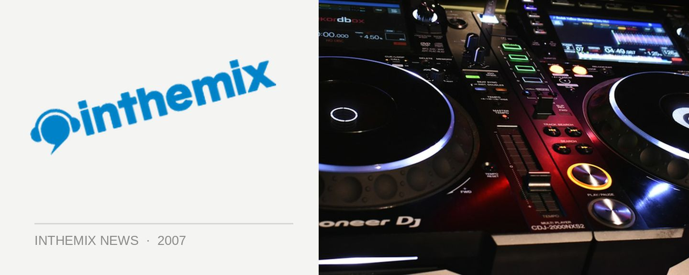

Godskitchen is coming to Perth
Mark Friday 28th September down in your diary as one of the world’s biggest clubbing brands Godskitchen will be returning to Perth, and it’ll be bringing Rank 1, The Thrillseekers, Flash Brothers, Alex Gaudino, Mashtronic and many more along for the ride.
Godskitchen kicked off in the early 90s and quickly evolved into a ‘superclub’ brand, with a series of parties and residencies held in the UK. Today it continues as a weekly event in Birmingham and tours continuously around the world. For nearly a decade it has been traveling to and naturally, it’ll be back in 2007.
The party will take place across both Metro City and Capitol with a ticket giving you access to both venues. Tickets are on sale now with a limited amount of Early Bird for sale for $50 + BF, with full price tickets clocking in at $65 + BF.
It all takes place on Friday 28th September check below for lineup details.
Metro City
Stage 1
Rank 1 (HOL)
The Thrillseekers (UK)
Flash Brothers LIVE (ISR)
Plus
Kenny L vs. John Paul
Piet El vs. Markus
Capitol
Stage 2 – Main Room
Alex Gaudino
Mashtronic (Live)
Micky Slim
Ivan Gough
Adam Kelly Vs. Anton Lord
Seb Sharp Vs. Rueban
Stage 3 – Upstairs
Signal Drivers
Mortal Realistiks
Loose Screws